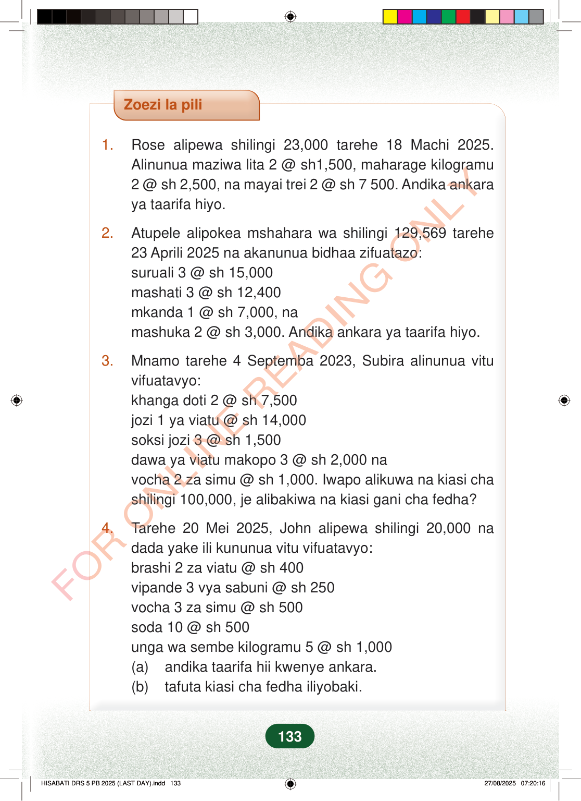

Zoezi la pili1.Rose alipewa shilingi 23,000 tarehe 18 Machi 2025.Alinunua maziwa lita 2 @ sh1,500, maharage kilogramu2 @ sh 2,500, na mayai trei 2 @ sh 7 500. Andika ankaraya taarifa hiyo.2.Atupele alipokea mshahara wa shilingi 129,569 tarehe23 Aprili 2025 na akanunua bidhaa zifuatazo:suruali 3 @ sh 15,000mashati 3 @ sh 12,400mkanda 1 @ sh 7,000, namashuka 2 @ sh 3,000. Andika ankara ya taarifa hiyo.3.Mnamo tarehe 4 Septemba 2023, Subira alinunua vituvifuatavyo:khanga doti 2 @ sh 7,500jozi 1 ya viatu @ sh 14,000soksi jozi 3 @ sh 1,500dawa ya viatu makopo 3 @ sh 2,000 navocha 2 za simu @ sh 1,000. Iwapo alikuwa na kiasi chashilingi 100,000, je alibakiwa na kiasi gani cha fedha?4.Tarehe 20 Mei 2025, John alipewa shilingi 20,000 nadada yake ili kununua vitu vifuatavyo:brashi 2 za viatu @ sh 400vipande 3 vya sabuni @ sh 250vocha 3 za simu @ sh 500soda 10 @ sh 500unga wa sembe kilogramu 5 @ sh 1,000(a)andika taarifa hii kwenye ankara.(b)tafuta kiasi cha fedha iliyobaki.133
Zoezi la pili
1. Rose alipewa shilingi 23,000 tarehe 18 Machi 2025. Alinunua maziwa lita 2 @ sh1,500, maharage kilogramu 2 @ sh 2,500, na mayai trei 2 @ sh 7 500. Andika ankara ya taarifa hiyo.
2. Atupele alipokea mshahara wa shilingi 129,569 tarehe 23 Aprili 2025 na akanunua bidhaa zifuatazo: suruali 3 @ sh 15,000 mashati 3 @ sh 12,400 mkanda 1 @ sh 7,000, na mashuka 2 @ sh 3,000. Andika ankara ya taarifa hiyo.
3. Mnamo tarehe 4 Septemba 2023, Subira alinunua vitu vifuatavyo: khanga doti 2 @ sh 7,500 jozi 1 ya viatu @ sh 14,000 soksi jozi 3 @ sh 1,500 dawa ya viatu makopo 3 @ sh 2,000 na vocha 2 za simu @ sh 1,000. Iwapo alikuwa na kiasi cha shilingi 100,000, je alibakiwa na kiasi gani cha fedha?
4. Tarehe 20 Mei 2025, John alipewa shilingi 20,000 na dada yake ili kununua vitu vifuatavyo: brashi 2 za viatu @ sh 400 vipande 3 vya sabuni @ sh 250 vocha 3 za simu @ sh 500 soda 10 @ sh 500 unga wa sembe kilogramu 5 @ sh 1,000 (a) andika taarifa hii kwenye ankara. (b) tafuta kiasi cha fedha iliyobaki.
133
Zoezi la piliAndika ankara ya taarifa hiyo.1.Rose alipewa shilingi 23,000 tarehe 18 Machi 2025.Alinunua maziwa lita 2 @ sh1,500, maharage kilogramu 2 @ sh 2,500, na mayai trei 2 @ sh 7 500.2.Atupele alipokea mshahara wa shilingi 129,569 tarehe 23 Aprili 2025 na akanunua bidhaa zifuatazo:suruali 3 @ sh 15,000mashati 3 @ sh 12,400mkanda 1 @ sh 7,000, namashuka 2 @ sh 3,000.Andika ankara ya taarifa hiyo.3.Mnamo tarehe 4 Septemba 2023, Subira alinunua vitu vifuatavyo:khanga doti 2 @ sh 7,500jozi 1 ya viatu @ sh 14,000soksi jozi 3 @ sh 1,500dawa ya viatu makopo 3 @ sh 2,000 navocha 2 za simu @ sh 1,000.Iwapo alikuwa na kiasi cha shilingi 100,000, je alibakiwa na kiasi gani cha fedha?4.Tarehe 20 Mei 2025, John alipewa shilingi 20,000 na dada yake ili kununua vitu vifuatavyo:brashi 2 za viatu @ sh 400vipande 3 vya sabuni @ sh 250vocha 3 za simu @ sh 500soda 10 @ sh 500unga wa sembe kilogramu 5 @ sh 1,000(a) andika taarifa hii kwenye ankara.(b) tafuta kiasi cha fedha iliyobaki.